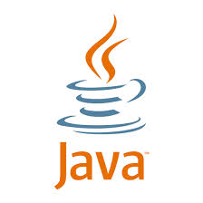
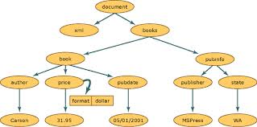

Ceylon
Ceylon es un leguaje programacion - desarrollado por Red Hat - inspirado principalmente en C# y Java. Debe especificar inmediatamente que Gavin King, director del proyecto , el nunca hablo de la creacion de un Java -killer : Ceylon no reemplaza la solucion Oracle y hacer que funcione , necesita una maquina virtual Java . Los programadores a menudo optan por la creacion de un nuevo lenguaje para resolver problemas con Java : el agno pasado , por ejemplo , mencionamos Scala y NetRexx. Ceylon entra en esta categoria . Las dificultades de Red Hat no dependen directamente de Java, pero las herramientas de desarrollo para Java Second Edition ( SE). El nuevo lenguaje se compone de cuatro elementos principales: la especificacion, un compilador , un plugin de Eclipse y el lenguaje mismo. Ceylon 1.0 es 80 % listo para el horario de la liberacion se produjo justo en el primer " hito " . La prioridad es la creacion de un kit de desarrollo de software (SDK ) de manera eficiente.

Red Hat
Empresa de Red Hat, Inc. está dedicada al desarrollo y apoyo del software libre y de código abierto. Produce una distribución Linux llamada Red Hat Linux. Fue el primer proveedor de la compañía de soluciones de código abierto que se cotizan en la bolsa de valores de las acciones tecnológicas en Wall Street, NASDAQ Bob Young, en 1993, fundó la ACC Corporation dedicada a la venta de software para UNIX. Al año siguiente, Marc Ewing creado una distribución Linux llamada Red Hat Linux lanzado en octubre, y luego se hizo famoso como "la versión de Halloween." Joven compró la empresa en 1995, Ewing, fundador del software de Red Hat, en el que joven se cubrió el papel de CEO. Las oficinas centrales de Red Hat fue luego se trasladó en febrero de 2002 desde Durham (Carolina del Norte) a Raleigh (Carolina del Norte). Red Hat patrocina el desarrollo de Fedora, una distribución de Linux mantenida por la comunidad libre de los usuarios. Red Hat Enterprise Linux es un tenedor de Fedora. I es el productor del nuevo idioma de programazion CEYLON.
Javascript y Ceylon
Ceylon esta diseñado para ejecutarse en la JVM (Java Virtual Machine) y se inspira en el analisis de otros lenguajes de programacion, que operan en la misma plataforma, aunque el modelo Java es principalmente el resultado, especialmente en el nivel sintactico. Sin embargo, hay algunas diferencias sustanciales con respecto, por ejemplo, no se permite a los operadores de sobrecarga reemplazados por su comportamiento polimórfico. El desarrollo comenzó en 2009, pero recién en 2011 en Beijing QCon propio King presentó el proyecto que también incluye un SDK especifico e independiente. Una primera versión publica del compilador, incluso en la etapa embrionaria y de funcionalidad reducida, fue lanzado a finales de diciembre de 2011. Ceylon es un lenguaje de tipos estaticos y, dada la proximidad de Java, es particularmente orientado a la programacion orientada a objetos.
Modelo Dom
La clase DOM (Document Object Model) es un XML en memoria representación de un documento XML. El DOM permite leer y modificar un documento XML mediante programación. Incluso el XmlReader puede leer un documento XML, sino que proporciona acceso a los no-caché, de sólo avance, sólo lectura. Esto significa que con XmlReader no proporciona funcionalidad para la modificación de los valores de un atributo o el contenido del elemento, ni para la inserción y eliminación de nodos. El cambio es la función principal de la DOM. Es la forma en que los datos XML común y estructurado se representa en la memoria, aunque los datos XML real se almacena de forma lineal dentro de un archivo o cuando provienen de otro objeto. A continuación se presentan los datos XML.
